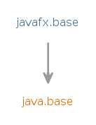

Module javafx.base
Defines the base APIs for the JavaFX UI toolkit, including APIs for
bindings, properties, collections, and events.
- Module Graph:
- 
- Since:
- 9
{kind=link}
-
-
Packages
Exports Package Description javafx.beans The packagejavafx.beanscontains the interfaces that define the most generic form of observability.javafx.beans.binding Provides classes that create and operate on aBindingthat calculates a value that depends on one or more sources.javafx.beans.property The packagejavafx.beans.propertydefines read-only properties and writable properties, plus a number of implementations.javafx.beans.property.adapter Provides various classes that act as adapters between a regular Java Bean property and a correspondingJavaFX Property.javafx.beans.value The packagejavafx.beans.valuecontains the two fundamental interfacesObservableValueandWritableValueand all of its sub-interfaces.javafx.collections Contains the essential JavaFX collections and collection utilitiesjavafx.collections.transformation Provides JavaFX collections that wrap and transform (for example, sort or filter) other JavaFX collections.javafx.event Provides basic framework for FX events, their delivery and handling.javafx.util Contains various utilities and helper classes.javafx.util.converter This package is for standard string converters for JavaFX.
-